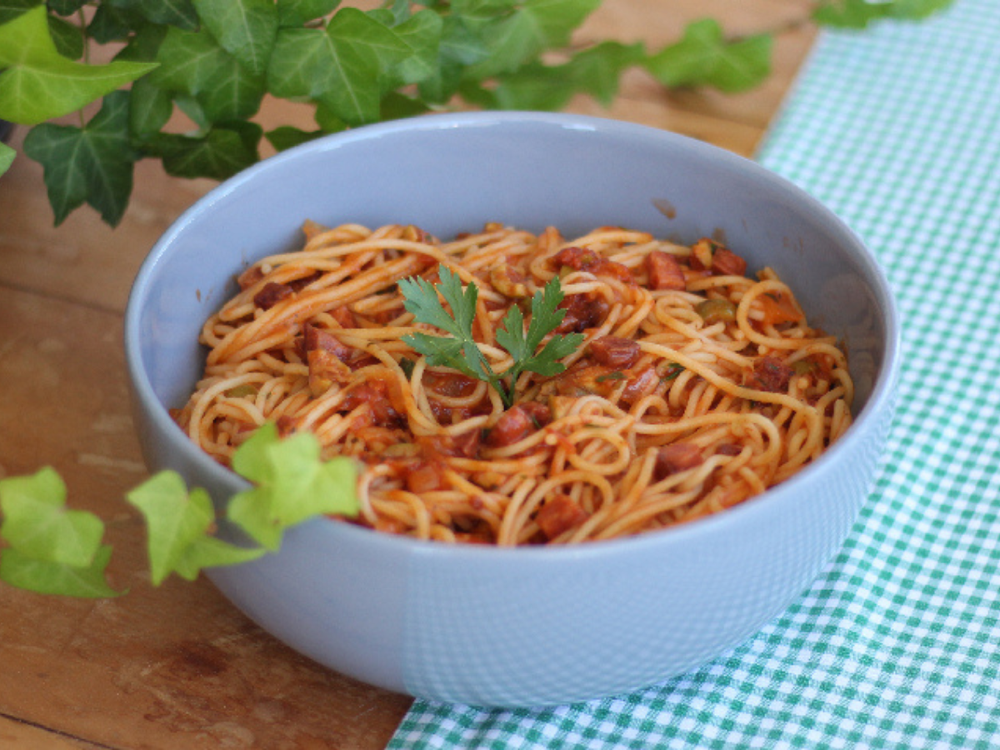
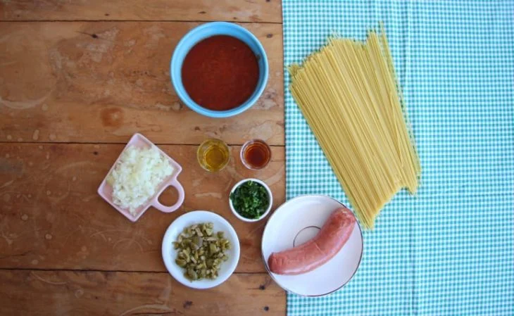
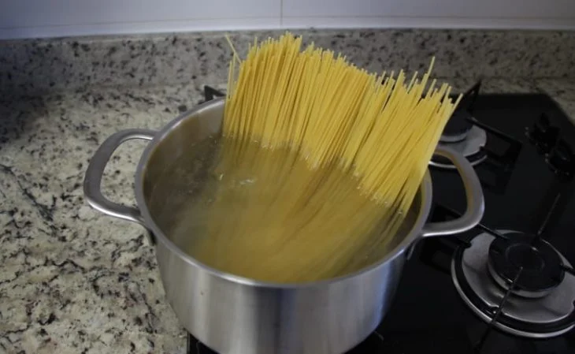
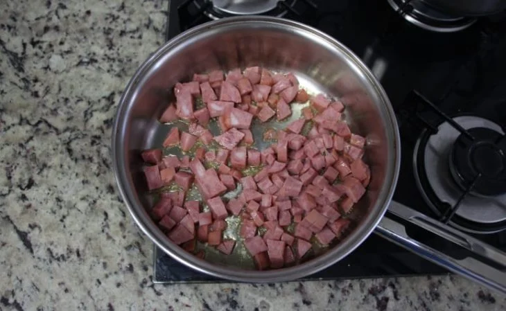
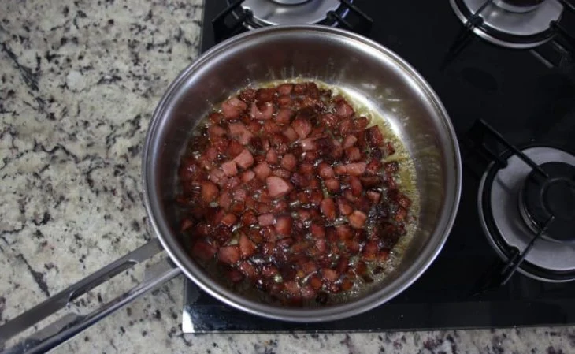
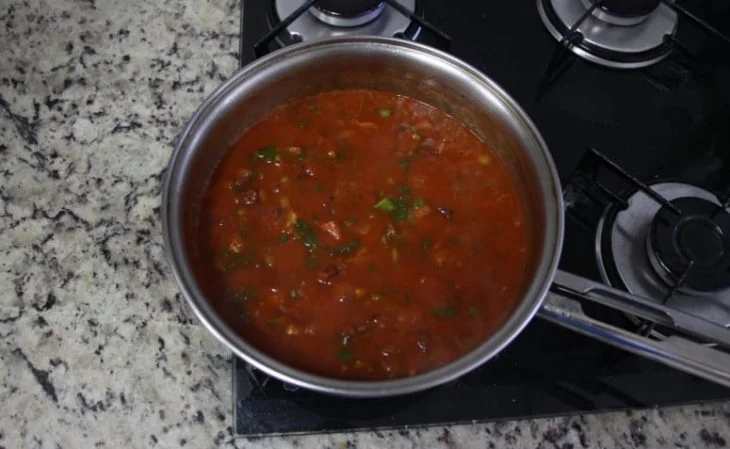
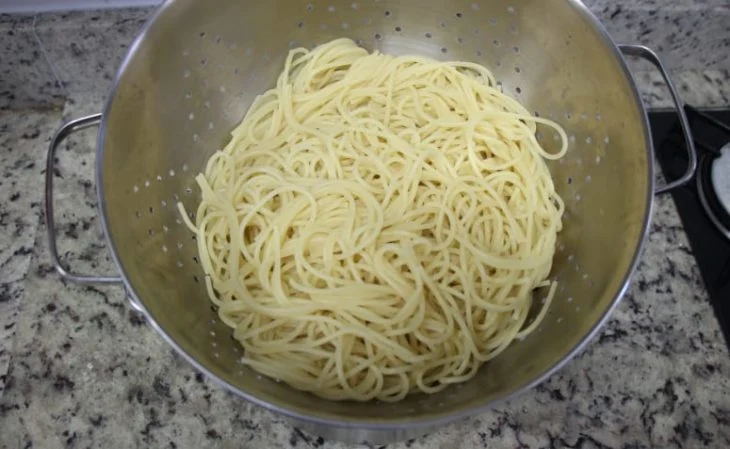
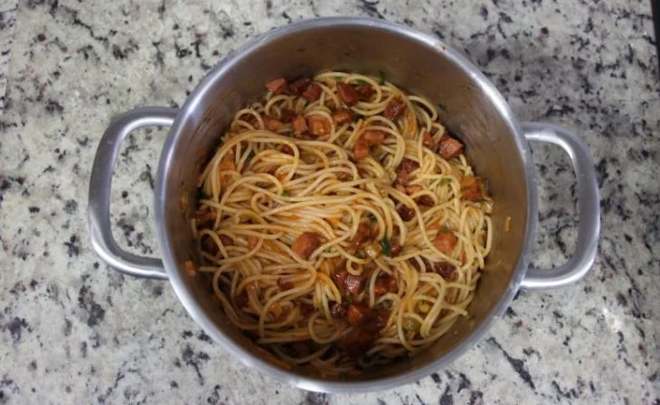

Macarronada de calabresa fácil

Lista de ingredientes
- 350 g de macarrão espaguete
- Azeite a gosto
- 1 linguiça calabresa picada
- Conhaque a gosto
- ½ cebola picada
- ½ xícara de chá de azeitonas picadas
- 1 pacote de molho de tomate
- Cheiro-verde a gosto
Modo de preparo
- 
Reúna todos os ingredientes;
- 
Leve uma panela com água ao fogo e cozinhe o macarrão com uma pitada de sal e um fio de óleo;
- 
Leve uma frigideira ao fogo médio, coloque azeite e frite a calabresa;
- 
Adicione um pouquinho de conhaque e dê uma flambada na calabresa;
- 
Acrescente a cebolas, as azeitonas, o molho de tomate, um pouquinho de água, o cheiro verde, misture e deixe o molho cozinhar em fogo baixo por cerca de 3 minutos;
- 
Quando o macarrão estiver cozido, escorra a água;
- 
Junte o macarrão e o molho, misture e sirva;